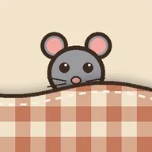
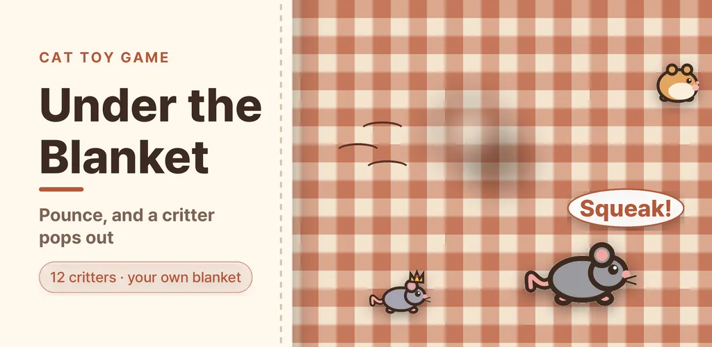
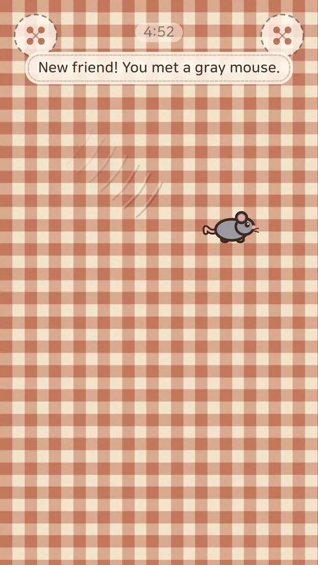
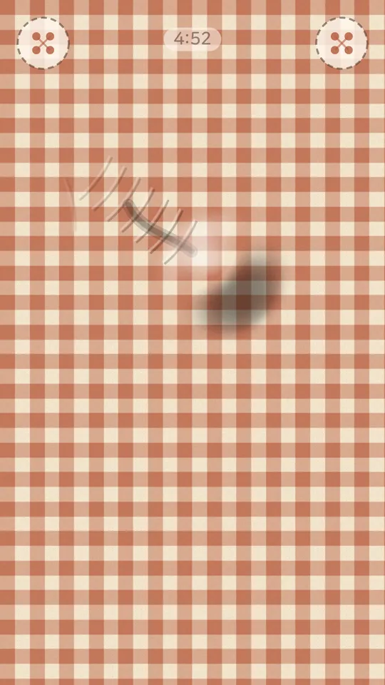
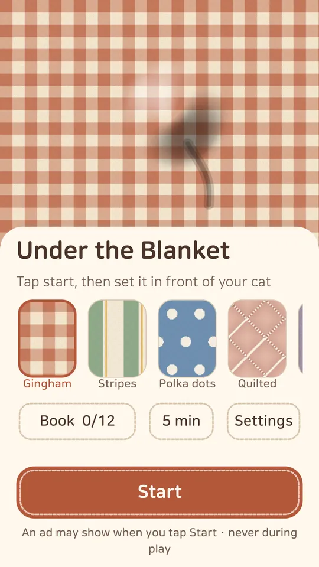
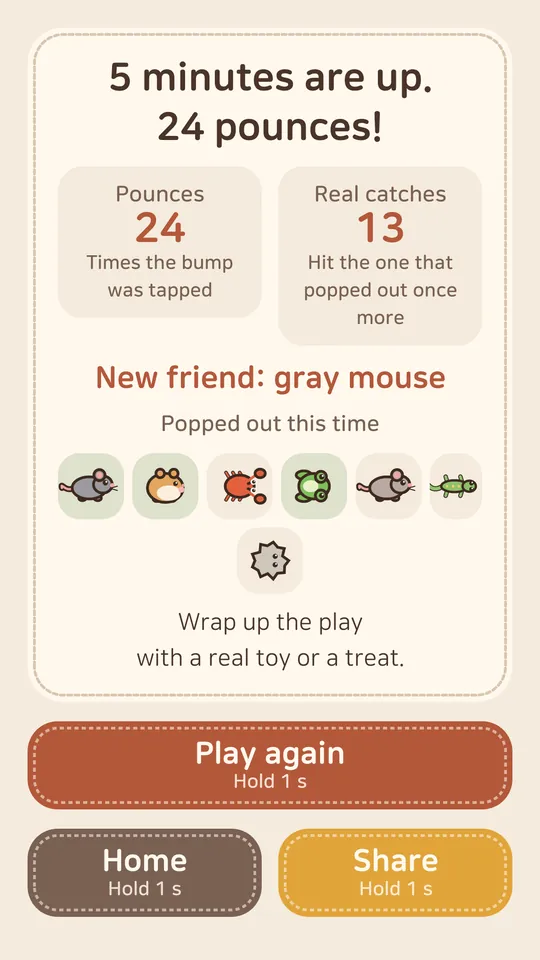
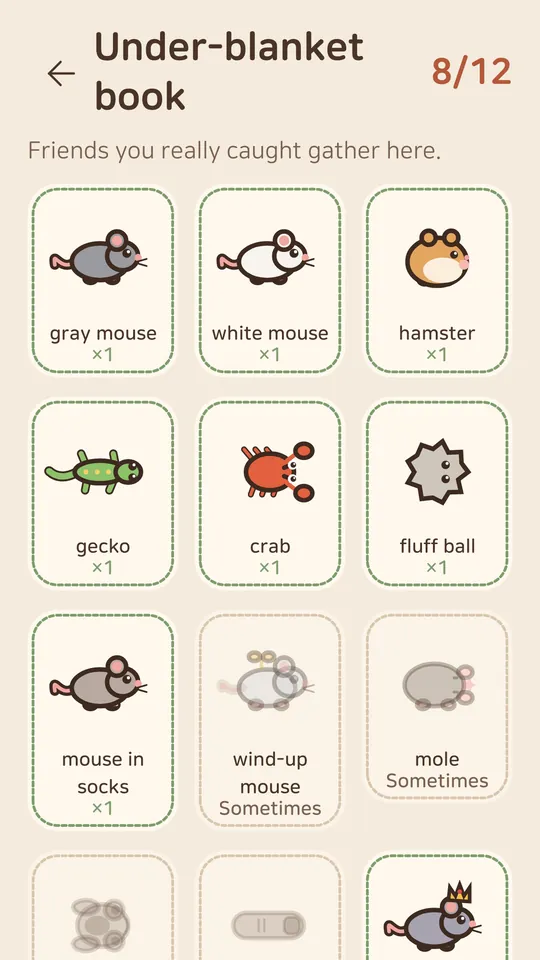
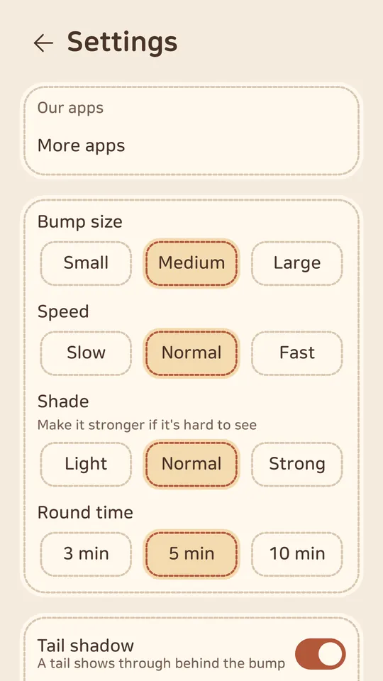

Blanket Mouse: Cat Toy Games
Games for cats: a mouse wiggles under the blanket. Pounce and it pops out!







About this app
Your screen becomes a blanket. Something bumpy wiggles underneath it.
When your cat pounces, "squeak!" — the hidden critter pops out and scurries away.
All you can see is the bump and the wrinkles it leaves behind. You only find out what was hiding once your cat catches it.
How to play
- Tap Start, then set the phone on the floor in front of your cat.
- The lump crawls in from the edge of the blanket and wriggles, freezes and dashes.
- When your cat hits the lump, the critter runs out in plain sight for about a second, then dives back under.
- Hit it once more in that moment and it counts as a "real catch."
- Choose a play time of 3, 5 or 10 minutes.
12 critters under the blanket
From everyday visitors like the gray mouse, white mouse, hamster, gecko, crab and fluff ball, to the mouse in socks, wind-up mouse, mole and frog, and the very rare mouse with a crown and owner's finger.
Every critter you catch for real fills a spot in the Under-blanket book. Nothing is unlocked with money or ads.
Play on your own blanket
Pick a photo of your own blanket from the gallery and use it as the play field (up to 6).
If the pattern is busy, "Soften the pattern" keeps the lump easy to see, and you can watch a lump pass across it before you save.
Photos stay on your phone and are never sent anywhere.
Six built-in blankets are included too: check, stripes, polka dots, quilted, fleece and flowers.
Built for cat paws
- During play the Back button does nothing. To leave, hold both top corners together for 2 seconds.
- Buttons on the result screen need a 1-second press.
- The screen stays on while your cat plays.
- Change bump size, speed, shading, tail shadow, sound and vibration in Settings.
About ads
There are no ads on the play screen or the result screen, because those are where paws land.
Ads appear only where you are holding the phone: a banner at the bottom of Home, Collection and Settings, and one interstitial right after you tap Start.
No in-app purchases, no rewarded ads, no login, no sensitive permissions.
Please note
Every cat reacts differently, and some cats may not be interested.
Always stay nearby while your cat plays; a screen protector or case is recommended.
This app is for entertainment and makes no promise about your pet's health or behavior.
Android · free with ads · Developer: RealTunaLove · Store listing in 17 languages